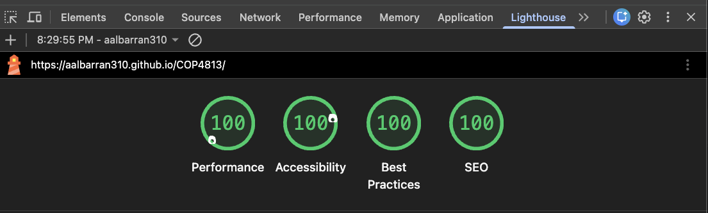
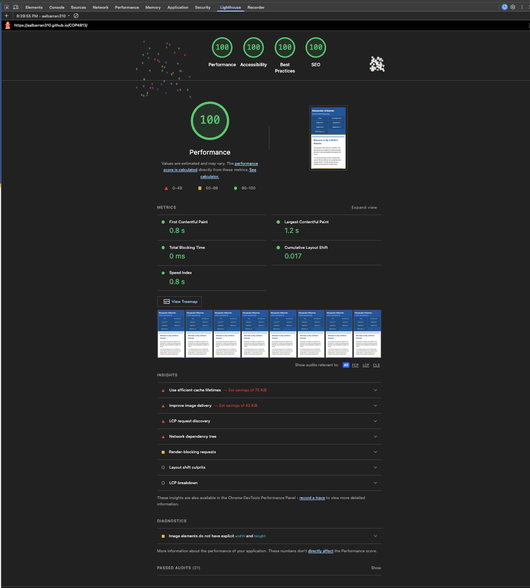
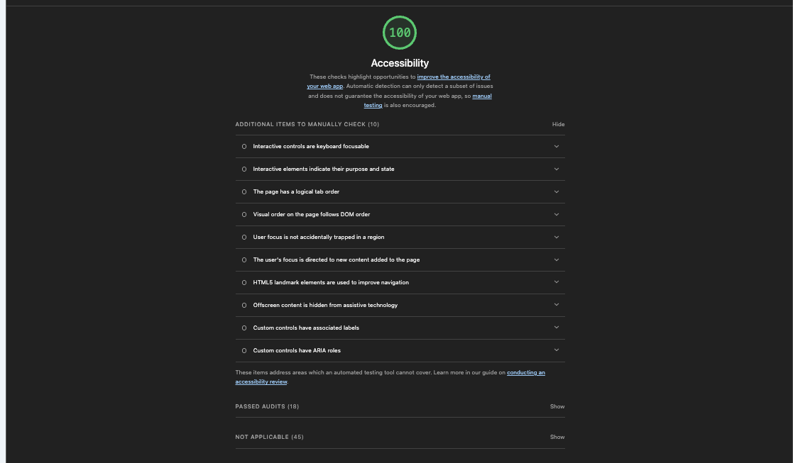
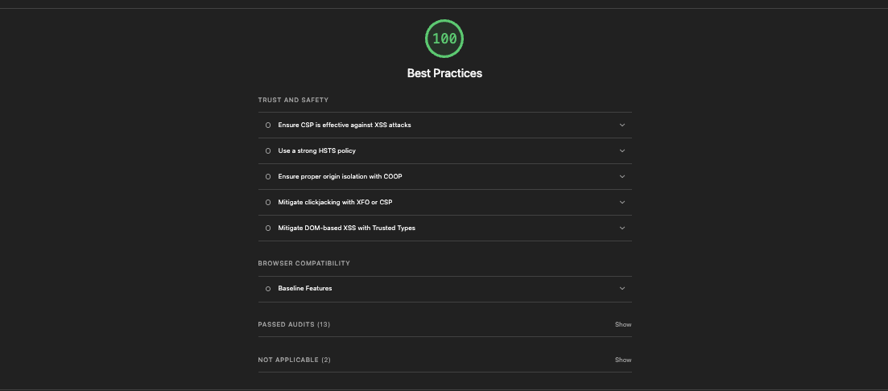
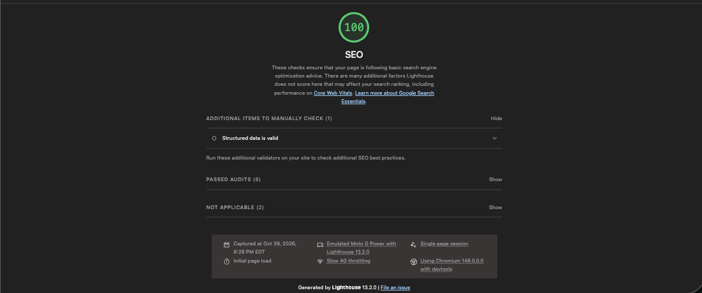

Making My Website Mobile Ready
This assignment updates my COP4813 homepage so it can be viewed on desktop computers, tablets, and mobile phones while keeping the same content and navigation choices.

Mobile Website Changes
I kept the existing website design and used responsive CSS so the same homepage can adjust to different screen sizes. The layout changes when the screen becomes narrower instead of sending visitors to a separate mobile page.
- The viewport is set so the page uses the device's actual screen width.
- The navigation links rearrange for smaller screens and remain available to tap.
- Navigation links have touch-friendly areas so they are easier to select on a phone.
- The homepage content and mascot image resize to fit the available width.
- Multi-column areas change to a single-column layout on narrow screens.
- The same homepage and menu are used on desktop and mobile devices.
Google Lighthouse Results
I tested the published homepage, COP4813 website homepage, with Chrome DevTools Lighthouse. The report was generated on October 29, 2026 at approximately 8:29 PM. I selected Navigation mode and Mobile device emulation.
| Category | Score | Result |
|---|---|---|
| Performance | 100 | All scored performance checks passed. |
| Accessibility | 100 | All automated accessibility audits passed. |
| Best Practices | 100 | All scored best-practice checks passed. |
| SEO | 100 | All scored SEO checks passed. |
Overall result: The homepage received a score of 100 in all four Lighthouse categories during this mobile Navigation-mode test.
Performance Details
The homepage's Performance score was 100. Lighthouse reported these measurements:
| Metric | Result |
|---|---|
| First Contentful Paint | 0.8 seconds |
| Largest Contentful Paint | 1.2 seconds |
| Total Blocking Time | 0 milliseconds |
| Cumulative Layout Shift | 0.017 |
| Speed Index | 0.8 seconds |
Lighthouse also listed opportunities involving cache lifetimes (estimated savings of 75 KiB), image delivery (estimated savings of 42 KiB), LCP request discovery, the network dependency tree, render-blocking requests, layout shift culprits, and LCP breakdown. Its diagnostics noted that image elements do not have explicit width and height attributes. These items are improvement suggestions and did not prevent the page from receiving a Performance score of 100.
Accessibility, Best Practices, and SEO
Accessibility — 100
The automated Accessibility score was 100, with 18 passed audits shown in the report. Lighthouse also displayed 10 additional items for manual checking, including keyboard focus, logical tab order, visible focus behavior, landmark navigation, and labels and roles for custom controls. These are manual review prompts, not reported automated failures.
Best Practices — 100
The Best Practices report showed 13 passed audits and 2 items marked not applicable. The report displayed security-related checks such as content security policy, HSTS, COOP, clickjacking protection, and Trusted Types. No scored best-practice issue lowered the score.
SEO — 100
The SEO report showed 8 passed audits and 2 items marked not applicable. It also displayed one additional manual check for structured data validity. The automated SEO score was 100.
Lighthouse Screenshots
The screenshots below are from the Lighthouse audit of the published homepage, not the Assignment 10 documentation page.
Overall Lighthouse Results

Performance Details

Accessibility Details

Best Practices Details

SEO Details

Analysis
The Lighthouse test of my published homepage returned 100 for Performance, Accessibility, Best Practices, and SEO. The performance measurements were also strong: First Contentful Paint was 0.8 seconds, Largest Contentful Paint was 1.2 seconds, Total Blocking Time was 0 milliseconds, Cumulative Layout Shift was 0.017, and Speed Index was 0.8 seconds.
Even though all four category scores were 100, Lighthouse identified a few areas that could still be improved. These included browser cache lifetimes, image delivery, render-blocking requests, and adding explicit width and height attributes to images. Lighthouse also provided manual accessibility checks and a structured-data check for SEO. Those items should be reviewed separately because an automated score does not replace manual testing.
Overall, the results show that the homepage performed well in this mobile Lighthouse test. The responsive layout keeps the same website content and navigation available while adapting the page to a smaller screen. I will continue to review the suggested improvements and manually test the page on a phone to make sure the menu and content are easy to use.